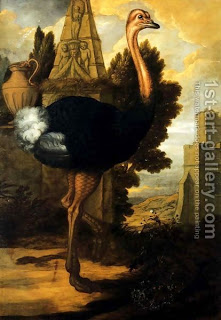

Chullin 21 - An Animal Whose Neck Was Broken
Zeiri taught the following rule: an animal whose neck was completely broken before it was slaughtered is considered to have died by itself. Therefore, it carries spiritual impurity as a nevelah, more so than a correctly slaughtered animal , which, although it may have been sick and thus not kosher, still does not carry spiritual impurity.
Said Rav Chisda, "We already learned this! If one did melikah to the bird with a knife instead of his fingernail, the bird becomes a nevelah. That is exactly the case of Zeiri, where the bird's neck is broken before it is slaughtered." They told him, "No, Zeiri's rule is new and necessary! In the case of the bird, melikah - killing the bird from the back of the neck - is not considered shechitah at all, but the case of an animal whose neck is broken it might have be different."
And why is melikah not considered a valid shechitah? Rav Huna said, "Because one burrows the knife under the neck bone," and Rav said, "Because he presses the knife downwards." These are two of the five invalidations of shechitah.
Art: Francis Barlow - An Ostrich